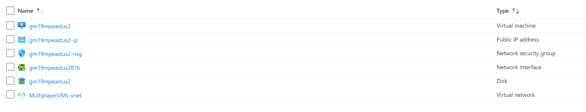

The steps below to deploy a provided pre-configured Azure ARM template can be followed if you want to quickly spin up a pre-configured MMXOD cloud hosted server in Azure with your own public IP.
Pre-reqs
You need to have created an Azure account if you don't have one already.
To create an account you need to input a credit card (and phone number I think) even if you want to use the free tier. I'm also not sure if all resources used in this ARM template are even covered by the free tier. If you are lucky, they might. Regardless, it must be a valid credit card and you must be prepared for it to be charged unspecified amounts of money over time (depending on server usage, much like a utilities bill). Thus, these steps definitely aren't for everyone.
Some experience in Azure and Windows server management is helpful, otherwise you'll have to learn as you follow the steps.
Steps
In a web browser, go to the Azure portal and sign in.
Create a resource group in the Azure portal. Name it whatever. This will have your Azure resources for the server.
The region matters. Choose one closest to you and your community for the lowest ping.
Note, different regions have different pricing. You can use the Azure pricing calculator to determine region-specific cost differences.
From the Azure portal top search bar, search for "deploy a custom template" and then select it from the available option.
Select "build your own template in the editor"
In the template, copy+paste the contents of arm.json file here: arm.json.
Replace variables as appropriate. (Can edit the arm.json itself or do it in the next step after pressing "Save" which lets you fill out the variables in the Azure portal)
Make sure your VM has a strong password and don't share it with anyone. Azure's VM password requirements: "The supplied password must be between 8-123 characters long and must satisfy at least 3 of password complexity requirements from the following: Contains an uppercase character 2) Contains a lowercase character 3) Contains a numeric digit 4) Contains a special character 5) Control characters are not allowed."
Don't change the "Location" or "Region" parameters.
For the resource group, choose the resource group you created in step 1.
After running the template, you should now have 6 resources created in your resource group (note, names will not match screenshot exactly): 
If deployment failed, try fixing any errors it mentions and re-run the above steps.
To "deploy" the relay server, remote desktop into the VM resource created. Copy the Relay Server application (the whole unzipped folder) somewhere on the VM (i.e. desktop).
In the VM, add the RelayServer.exe file in windows firewall as an allowed app.
Run the relay server.
You may need to open it from a powershell prompt or else it may shut down immediately after closing, i.e. on an error.
If you are not using a self contained build of the relay server, you need to install .NET 5 first on the VM.
Now you should be able to connect to the server from MMXOD using region.txt, connecting to the ip address assigned to you in the ip resource created.
Tips/Notes
Only host a cloud server if you can afford it and have the money to burn. There is no guarantee on how much Azure will charge. Each region costs anywhere from $30-40 USD a month (with the template above), and that's not factoring in bandwidth. If you have lots of concurrent users/bandwidth, it could be much higher. Some regions may be even more expensive.
You can turn off the VM when not in use to save money, if you are just using it on demand with a small group of friends. This might save a substantial amount of money.
If you want high uptime, you can set the VM to automatically start the relay server on boot using windows task manager to minimize downtime when it needs to be taken down for maintenance, OS upgrades, etc.
Only strive for 100% uptime if you have lots of time. Otherwise avoid setting this expectation for a free fan game. It's already a lot of money to host the game, and time is often even more valuable.
If these steps don't work no matter what to do, you could always create the Azure resources manually, but this is far more work.
You don't have to use Azure. Amazon Web Services (AWS) is another option if you are familiar with that.
If you are stuck, aside from Google you can try ChatGPT which is all the rage these days (at least at the time of this writing). It can provide some helpful guidance on Azure and I was surprised at how effective it is. For example search "What is Azure", "What do I need to create an Azure account", "How do I deploy an ARM template to a resource group in Azure", "How do I remote into an Azure VM", etc.